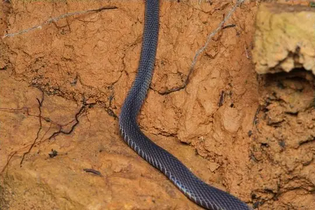
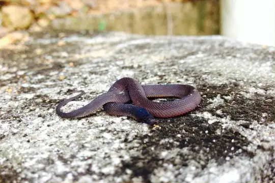
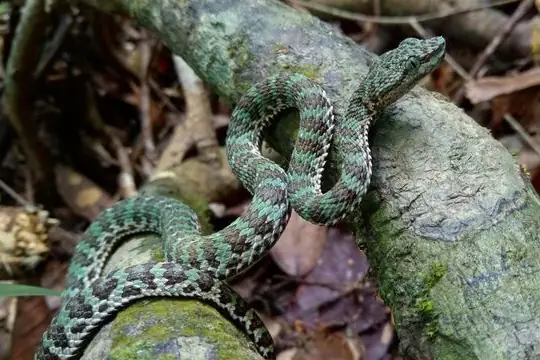
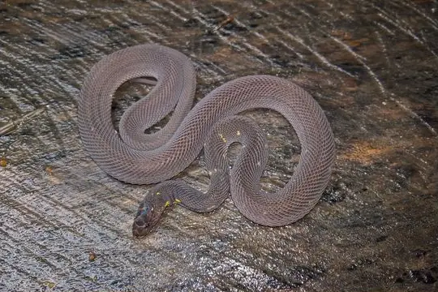
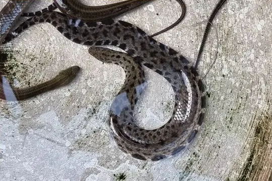
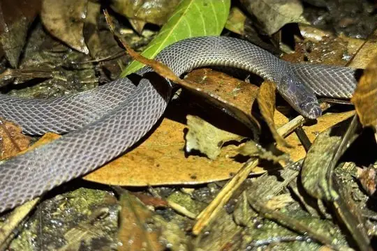

Snakes of Vietnam
237 living snake species are recorded in Vietnam in SnakeList: 74 venomous and 163 non-venomous, from 13 families.
- 237living species
- 74venomous
- 163non-venomous
- 13families
These totals count the unique living snake species SnakeList records in Vietnam. A species counts if it is recorded anywhere in the country, so not every snake lives in every part of it.
Species
Showing 237 species
 Anderson's Mountain KeelbackOpisthotropis andersonii
Anderson's Mountain KeelbackOpisthotropis andersonii Andrea's KeelbackHebius andreae
Andrea's KeelbackHebius andreae Angel's KeelbackRhabdophis angeli
Angel's KeelbackRhabdophis angeli Angel's Kukri SnakeOligodon macrurus
Angel's Kukri SnakeOligodon macrurus Annam KeelbackHebius annamensis
Annam KeelbackHebius annamensis Annam Kukri SnakeOligodon annamensis
Annam Kukri SnakeOligodon annamensis Annulated Sea SnakeHydrophis cyanocinctus
Annulated Sea SnakeHydrophis cyanocinctus- No photo yetAnomalous Sea SnakeHydrophis anomalus
 Ashy Kukri SnakeOligodon cinereus
Ashy Kukri SnakeOligodon cinereus Asian Vine SnakeAhaetulla prasina
Asian Vine SnakeAhaetulla prasina Asiatic Water SnakeTrimerodytes aequifasciatus
Asiatic Water SnakeTrimerodytes aequifasciatus Assam Kukri SnakeOligodon catenatus
Assam Kukri SnakeOligodon catenatus Assam Mountain SnakePlagiopholis nuchalis
Assam Mountain SnakePlagiopholis nuchalis Bamboo SnakePseudoxenodon bambusicola
Bamboo SnakePseudoxenodon bambusicola Banded KraitBungarus fasciatus
Banded KraitBungarus fasciatus Banded Wolf SnakeLycodon fasciatus
Banded Wolf SnakeLycodon fasciatus- No photo yetBangkok Mud SnakeEnhydris jagorii
 Barron's Kukri SnakeOligodon barroni
Barron's Kukri SnakeOligodon barroni- No photo yetBavi KeelbackRhabdophis callichroma
 Bearded SnakeFimbrios klossi
Bearded SnakeFimbrios klossi- No photo yetBelcher's Sea SnakeHydrophis belcheri
 Bella Rat SnakeArchelaphe bella
Bella Rat SnakeArchelaphe bella Bennett's Mud SnakeMyrrophis bennettii
Bennett's Mud SnakeMyrrophis bennettii Big-tooth SnakeLycodon flavozonatus
Big-tooth SnakeLycodon flavozonatus- No photo yetBighead Sea SnakeHydrophis annandalei
 Binh’s Bronzeback SnakeDendrelaphis binhi
Binh’s Bronzeback SnakeDendrelaphis binhi Black-headed SeasnakeHydrophis atriceps
Black-headed SeasnakeHydrophis atriceps Black-striped Rat SnakePtyas dhumnades
Black-striped Rat SnakePtyas dhumnades Blanford's Bridal SnakeLycodon davisonii
Blanford's Bridal SnakeLycodon davisonii Blood PythonPython brongersmai
Blood PythonPython brongersmai Blue KraitBungarus candidus
Blue KraitBungarus candidus Blue-eyed Bush Rat SnakeGonyosoma coeruleum
Blue-eyed Bush Rat SnakeGonyosoma coeruleum Bocourt's Mud SnakeSubsessor bocourti
Bocourt's Mud SnakeSubsessor bocourti Boie's Mud SnakeHypsiscopus plumbea
Boie's Mud SnakeHypsiscopus plumbea Boulenger's KeelbackHebius boulengeri
Boulenger's KeelbackHebius boulengeri- No photo yetBourret's Cat SnakeBoiga bourreti

Bourret's Odd-scaled SnakeAchalinus ater Brook's Sea SnakeHydrophis brookii
Brook's Sea SnakeHydrophis brookii Brown Spotted PitviperProtobothrops mucrosquamatus
Brown Spotted PitviperProtobothrops mucrosquamatus Buff Striped KeelbackAmphiesma stolatum
Buff Striped KeelbackAmphiesma stolatum Burmese BronzebackDendrelaphis subocularis
Burmese BronzebackDendrelaphis subocularis Burmese PythonPython bivittatus
Burmese PythonPython bivittatus Cantor's Kukri SnakeOligodon cyclurus
Cantor's Kukri SnakeOligodon cyclurus Cardamom Mountains Green PitviperTrimeresurus cardamomensis
Cardamom Mountains Green PitviperTrimeresurus cardamomensis Cardamom Mountains Wolf SnakeLycodon cardamomensis
Cardamom Mountains Wolf SnakeLycodon cardamomensis Cave RacerElaphe taeniura
Cave RacerElaphe taeniura Chapa Mountain KeelbackOpisthotropis jacobi
Chapa Mountain KeelbackOpisthotropis jacobi- No photo yetCheckered KeelbackXenochrophis piscator
 Chequered KeelbackFowlea piscator
Chequered KeelbackFowlea piscator Chinese Bamboo SnakePseudoxenodon karlschmidti
Chinese Bamboo SnakePseudoxenodon karlschmidti Chinese CobraNaja atra
Chinese CobraNaja atra Chinese Green Tree ViperTrimeresurus stejnegeri
Chinese Green Tree ViperTrimeresurus stejnegeri Chinese Keelback Water SnakeTrimerodytes percarinatus
Chinese Keelback Water SnakeTrimerodytes percarinatus Chinese Kukri SnakeOligodon chinensis
Chinese Kukri SnakeOligodon chinensis Chinese Many-tooth SnakeSibynophis chinensis
Chinese Many-tooth SnakeSibynophis chinensis Chinese MoccasinDeinagkistrodon acutus
Chinese MoccasinDeinagkistrodon acutus Chinese Mountain Pit ViperOvophis monticola
Chinese Mountain Pit ViperOvophis monticola Chinese Mountain SnakePlagiopholis styani
Chinese Mountain SnakePlagiopholis styani Chinese Mud SnakeMyrrophis chinensis
Chinese Mud SnakeMyrrophis chinensis Collared Reed Snake (pavimentata)Calamaria pavimentata
Collared Reed Snake (pavimentata)Calamaria pavimentata Common Bamboo ViperCraspedocephalus gramineus
Common Bamboo ViperCraspedocephalus gramineus Common Many-tooth SnakeSibynophis collaris
Common Many-tooth SnakeSibynophis collaris Common Mock ViperPsammodynastes pulverulentus
Common Mock ViperPsammodynastes pulverulentus Common Wolf Snake (capucinus)Lycodon capucinus
Common Wolf Snake (capucinus)Lycodon capucinus Cu Lao Cham Kukri SnakeOligodon culaochamensis
Cu Lao Cham Kukri SnakeOligodon culaochamensis- No photo yetCuc's Mountain SnakeOpisthotropis cucae
 Cute Slug-eating SnakePareas abros
Cute Slug-eating SnakePareas abros Dalat Dwarf SnakeCalamaria buchi
Dalat Dwarf SnakeCalamaria buchi- No photo yetDao Van Tien's Stream SnakeOpisthotropis daovantieni
 Delacour's Mountain SnakePlagiopholis delacouri
Delacour's Mountain SnakePlagiopholis delacouri Deuve's Kukri SnakeOligodon deuvei
Deuve's Kukri SnakeOligodon deuvei Di Linh Slug-eating SnakePareas temporalis
Di Linh Slug-eating SnakePareas temporalis Diard's BlindsnakeArgyrophis diardii
Diard's BlindsnakeArgyrophis diardii- No photo yetDominic’s Reed SnakeCalamaria dominici
- No photo yetDurand's Mountain Stream SnakeOpisthotropis durandi
 Dwarf SeasnakeHydrophis caerulescens
Dwarf SeasnakeHydrophis caerulescens Eastern Bronzeback Tree SnakeDendrelaphis proarchos
Eastern Bronzeback Tree SnakeDendrelaphis proarchos Eberhardt's Kukri SnakeOligodon eberhardti
Eberhardt's Kukri SnakeOligodon eberhardti Egg-eating Sea SnakeEmydocephalus annulatus
Egg-eating Sea SnakeEmydocephalus annulatus Emily’s Burrowing SnakeAchalinus emilyae
Emily’s Burrowing SnakeAchalinus emilyae Fasciolated Kukri SnakeOligodon fasciolatus
Fasciolated Kukri SnakeOligodon fasciolatus Fea ViperAzemiops feae
Fea ViperAzemiops feae Fire-back KeelbackHebius igneus
Fire-back KeelbackHebius igneus Formosa Kukri SnakeOligodon formosanus
Formosa Kukri SnakeOligodon formosanus Formosa Slug SnakePareas formosensis
Formosa Slug SnakePareas formosensis Formosa Wolf SnakeLycodon ruhstrati
Formosa Wolf SnakeLycodon ruhstrati Futsing Wolf SnakeLycodon futsingensis
Futsing Wolf SnakeLycodon futsingensis- No photo yetGia Lai Reed SnakeCalamaria gialaiensis
 Gore's Bronzeback (biloreatus)Dendrelaphis biloreatus
Gore's Bronzeback (biloreatus)Dendrelaphis biloreatus Gray Cat SnakeBoiga siamensis
Gray Cat SnakeBoiga siamensis Greater Green SnakePtyas major
Greater Green SnakePtyas major Green Cat SnakeBoiga cyanea
Green Cat SnakeBoiga cyanea Green KeelbackRhabdophis nigrocinctus
Green KeelbackRhabdophis nigrocinctus Green Rat Snake (nigromarginata)Ptyas nigromarginata
Green Rat Snake (nigromarginata)Ptyas nigromarginata Green Vine Snake (nasuta)Ahaetulla nasuta
Green Vine Snake (nasuta)Ahaetulla nasuta
Grey Burrowing SnakeAchalinus spinalis Guangxi Cat SnakeBoiga guangxiensis
Guangxi Cat SnakeBoiga guangxiensis Guangxi Coral SnakeSinomicrurus peinani
Guangxi Coral SnakeSinomicrurus peinani Gumprecht's Pit ViperTrimeresurus gumprechti
Gumprecht's Pit ViperTrimeresurus gumprechti Guo's Green Pit ViperTrimeresurus guoi
Guo's Green Pit ViperTrimeresurus guoi Hai Ha Mountain Stream KeelbackOpisthotropis haihaensis
Hai Ha Mountain Stream KeelbackOpisthotropis haihaensis Hainan Sunbeam SnakeXenopeltis hainanensis
Hainan Sunbeam SnakeXenopeltis hainanensis Hainanese Stream SnakeTrimerodytes balteatus
Hainanese Stream SnakeTrimerodytes balteatus Hampton's Slug SnakePareas hamptoni
Hampton's Slug SnakePareas hamptoni Hon Son Pit ViperTrimeresurus honsonensis
Hon Son Pit ViperTrimeresurus honsonensis Hong Kong Dwarf SnakeCalamaria septentrionalis
Hong Kong Dwarf SnakeCalamaria septentrionalis Horned Pit ViperProtobothrops cornutus
Horned Pit ViperProtobothrops cornutus Hubei KeelbackRhabdophis nuchalis
Hubei KeelbackRhabdophis nuchalis Indian Rock PythonPython molurus
Indian Rock PythonPython molurus Indo-Chinese Rat SnakePtyas korros
Indo-Chinese Rat SnakePtyas korros Indo-Chinese Sand SnakePsammophis indochinensis
Indo-Chinese Sand SnakePsammophis indochinensis Indo-chinese Spitting CobraNaja siamensis
Indo-chinese Spitting CobraNaja siamensis Jack's Water SnakeHomalopsis mereljcoxi
Jack's Water SnakeHomalopsis mereljcoxi- No photo yetJerdon's Sea SnakeHydrophis jerdonii
 Jodi's Pipe-SnakeCylindrophis jodiae
Jodi's Pipe-SnakeCylindrophis jodiae- No photo yetJulian’s Burrowing SnakeAchalinus juliani
 Kanburi Pit ViperTrimeresurus kanburiensis
Kanburi Pit ViperTrimeresurus kanburiensis Keeled Rat SnakePtyas carinata
Keeled Rat SnakePtyas carinata Kellog's Coral SnakeSinomicrurus kelloggi
Kellog's Coral SnakeSinomicrurus kelloggi Kelung Cat SnakeBoiga kraepelini
Kelung Cat SnakeBoiga kraepelini Khasi KeelbackHebius khasiensis
Khasi KeelbackHebius khasiensis King CobraOphiophagus hannah
King CobraOphiophagus hannah- No photo yetKloss' Sea SnakeHydrophis klossi
 Kramer's Pit ViperTrimeresurus macrops
Kramer's Pit ViperTrimeresurus macrops Kutkai KeelbackHebius bitaeniatus
Kutkai KeelbackHebius bitaeniatus Kuznetsovs’ Slug-eating SnakePareas kuznetsovorum
Kuznetsovs’ Slug-eating SnakePareas kuznetsovorum Lacroix Kukri SnakeOligodon lacroixi
Lacroix Kukri SnakeOligodon lacroixi Lambert's Sea SnakeHydrophis lamberti
Lambert's Sea SnakeHydrophis lamberti Langbian KukriOligodon tuani
Langbian KukriOligodon tuani Laotian Wolf SnakeLycodon laoensis
Laotian Wolf SnakeLycodon laoensis Linne's Water SnakeHomalopsis buccata
Linne's Water SnakeHomalopsis buccata- No photo yetLong-snouted Kukri SnakeOligodon rostralis
 MacLelland's Coral SnakeSinomicrurus macclellandi
MacLelland's Coral SnakeSinomicrurus macclellandi Malayan Banded Wolf SnakeLycodon subcinctus
Malayan Banded Wolf SnakeLycodon subcinctus Malayan Pit ViperCalloselasma rhodostoma
Malayan Pit ViperCalloselasma rhodostoma Mandarin RatsnakeEuprepiophis mandarinus
Mandarin RatsnakeEuprepiophis mandarinus Many-banded Green SnakePtyas multicincta
Many-banded Green SnakePtyas multicincta Many-spotted Cat SnakeBoiga multomaculata
Many-spotted Cat SnakeBoiga multomaculata Mao-lan PitviperProtobothrops maolanensis
Mao-lan PitviperProtobothrops maolanensis Mekong Mud SnakeEnhydris subtaeniata
Mekong Mud SnakeEnhydris subtaeniata Modest KeelbackHebius modestus
Modest KeelbackHebius modestus- No photo yetMorice's Kukri SnakeOligodon moricei
 Mouhot's Cambodian Kukri SnakeOligodon mouhoti
Mouhot's Cambodian Kukri SnakeOligodon mouhoti Mount Omei KeelbackHebius optatus
Mount Omei KeelbackHebius optatus Mountain Slug SnakePareas margaritophorus
Mountain Slug SnakePareas margaritophorus Muller's Wolf SnakeLycodon muelleri
Muller's Wolf SnakeLycodon muelleri Müller's Blind SnakeArgyrophis muelleri
Müller's Blind SnakeArgyrophis muelleri Nagao Kukri SnakeOligodon nagao
Nagao Kukri SnakeOligodon nagao Namdong Wolf SnakeLycodon chapaensis
Namdong Wolf SnakeLycodon chapaensis Nganson BronzebackDendrelaphis ngansonensis
Nganson BronzebackDendrelaphis ngansonensis Nguyenvansang's SnakeColubroelaps nguyenvansangi
Nguyenvansang's SnakeColubroelaps nguyenvansangi Northeastern Hill KraitBungarus bungaroides
Northeastern Hill KraitBungarus bungaroides Northern Red-necked KeelbackRhabdophis helleri
Northern Red-necked KeelbackRhabdophis helleri Ocellated Kukri SnakeOligodon ocellatus
Ocellated Kukri SnakeOligodon ocellatus Oriental RatsnakePtyas mucosa
Oriental RatsnakePtyas mucosa Ornate Sea SnakeHydrophis ornatus
Ornate Sea SnakeHydrophis ornatus Painted Wolf SnakeLycodon pictus
Painted Wolf SnakeLycodon pictus Pope's Bamboo Pit ViperTrimeresurus popeiorum
Pope's Bamboo Pit ViperTrimeresurus popeiorum Pope's KeelbackHebius popei
Pope's KeelbackHebius popei
Quang Binh PitviperTrimeresurus truongsonensis Radiated RatsnakeCoelognathus radiatus
Radiated RatsnakeCoelognathus radiatus Rainbow Mud SnakeEnhydris enhydris
Rainbow Mud SnakeEnhydris enhydris Red Bamboo SnakeOreocryptophis porphyraceus
Red Bamboo SnakeOreocryptophis porphyraceus Red River KraitBungarus slowinskii
Red River KraitBungarus slowinskii Red-banded SnakeLycodon rufozonatus
Red-banded SnakeLycodon rufozonatus Red-eyed WhipsnakeAhaetulla rufusoculara
Red-eyed WhipsnakeAhaetulla rufusoculara Red-headed KraitBungarus flaviceps
Red-headed KraitBungarus flaviceps Red-tailed Pipe SnakeCylindrophis ruffus
Red-tailed Pipe SnakeCylindrophis ruffus Rendahl's Wolf SnakeLycodon paucifasciatus
Rendahl's Wolf SnakeLycodon paucifasciatus Reticulated PythonMalayopython reticulatus
Reticulated PythonMalayopython reticulatus- No photo yetRhade Wolf SnakeLycodon anakradaya
 Rhino Rat SnakeGonyosoma boulengeri
Rhino Rat SnakeGonyosoma boulengeri Rose Big-tooth SnakeLycodon rosozonatus
Rose Big-tooth SnakeLycodon rosozonatus Rufous Burrowing SnakeAchalinus rufescens
Rufous Burrowing SnakeAchalinus rufescens Saint Giron's Kukri SnakeOligodon saintgironsi
Saint Giron's Kukri SnakeOligodon saintgironsi Sang's Reed SnakeCalamaria sangi
Sang's Reed SnakeCalamaria sangi Siamese Blind SnakeArgyrophis siamensis
Siamese Blind SnakeArgyrophis siamensis Slender-necked SeasnakeHydrophis melanocephalus
Slender-necked SeasnakeHydrophis melanocephalus
Smith's Rough Water SnakeFimbrios smithi- No photo yetSmith's Small-headed Sea SnakeHydrophis parviceps
 Southeast Asian BockadamCerberus schneiderii
Southeast Asian BockadamCerberus schneiderii- No photo yetSouthern Red-banded SnakeLycodon meridionale
 Speckled Coral Snake (maculiceps)Calliophis maculiceps
Speckled Coral Snake (maculiceps)Calliophis maculiceps Spiny-headed SeasnakeHydrophis peronii
Spiny-headed SeasnakeHydrophis peronii Spotted Slug SnakePareas macularius
Spotted Slug SnakePareas macularius Stoke's SeasnakeHydrophis stokesii
Stoke's SeasnakeHydrophis stokesii Striped Kukri SnakeOligodon taeniatus
Striped Kukri SnakeOligodon taeniatus Striped Sea SnakeHydrophis fasciatus
Striped Sea SnakeHydrophis fasciatus- No photo yetStriped-belly Reed SnakeCalamaria strigiventris
 Taiwan Mountain PitviperOvophis makazayazaya
Taiwan Mountain PitviperOvophis makazayazaya Taiwan Stink SnakeElaphe carinata
Taiwan Stink SnakeElaphe carinata- No photo yetTam Dao Stream SnakeOpisthotropis tamdaoensis

Tay Ninh Mud SnakeEnhydris innominata Tentacled SnakeErpeton tentaculatum
Tentacled SnakeErpeton tentaculatum- No photo yetThanh's Reed SnakeCalamaria thanhi
 Three Horned-scaled PitviperProtobothrops sieversorum
Three Horned-scaled PitviperProtobothrops sieversorum- No photo yetTim’s Burrowing SnakeAchalinus timi
 Tonkin KeelbackHebius atemporalis
Tonkin KeelbackHebius atemporalis Tonkin Mountain KeelbackOpisthotropis lateralis
Tonkin Mountain KeelbackOpisthotropis lateralis Tonkin PitviperOvophis tonkinensis
Tonkin PitviperOvophis tonkinensis
Trang An Burrowing SnakeAchalinus tranganensis Trungkhanh PitviperProtobothrops trungkhanhensis
Trungkhanh PitviperProtobothrops trungkhanhensis Truong’s Wolf SnakeLycodon truongi
Truong’s Wolf SnakeLycodon truongi Variable Reed SnakeCalamaria lumbricoidea
Variable Reed SnakeCalamaria lumbricoidea Vietnam Water SnakeHebius chapaensis
Vietnam Water SnakeHebius chapaensis- No photo yetVietnam Worm SnakeArgyrophis giadinhensis
 Vietnamese Large-toothed SnakeLycodon meridionalis
Vietnamese Large-toothed SnakeLycodon meridionalis Viperine Sea SnakeHydrophis viperinus
Viperine Sea SnakeHydrophis viperinus- No photo yetVo Quy’s Mountain Stream KeelbackOpisthotropis voquyi
 Vogel's Pit ViperTrimeresurus vogeli
Vogel's Pit ViperTrimeresurus vogeli Wagler's Pit ViperTropidolaemus wagleri
Wagler's Pit ViperTropidolaemus wagleri White-banded Wolf SnakeLycodon septentrionalis
White-banded Wolf SnakeLycodon septentrionalis- No photo yetWhite-eyed KeelbackAmphiesmoides ornaticeps
 White-headed Fea ViperAzemiops kharini
White-headed Fea ViperAzemiops kharini White-lipped KeelbackHebius leucomystax
White-lipped KeelbackHebius leucomystax White-lipped PitviperTrimeresurus albolabris
White-lipped PitviperTrimeresurus albolabris Yellow Sea SnakeHydrophis spiralis
Yellow Sea SnakeHydrophis spiralis Yellow Striped SnakeCoelognathus flavolineatus
Yellow Striped SnakeCoelognathus flavolineatus Yellow-lipped Sea KraitLaticauda colubrina
Yellow-lipped Sea KraitLaticauda colubrina Yellow-spotted Keelback Water SnakeFowlea flavipunctatus
Yellow-spotted Keelback Water SnakeFowlea flavipunctatus Yunnan Annulate KeelbackTrimerodytes yunnanensis
Yunnan Annulate KeelbackTrimerodytes yunnanensis Ziggy Stardust SnakeParafimbrios lao
Ziggy Stardust SnakeParafimbrios lao Zug's Odd-scaled SnakeAchalinus zugorum
Zug's Odd-scaled SnakeAchalinus zugorum- No photo yetAcrochordus dubius
- No photo yetArgyrophis giandinhensis
- No photo yetCalamaria abramovi
 Calamaria concolor
Calamaria concolor- No photo yetCraspedocephalus rubeus
- No photo yetCryptelytrops honsonensis
- No photo yetEmydocephalus szczerbaki
- No photo yetHydrophis pachycercos
 Liopeltis pallidonuchalis
Liopeltis pallidonuchalis- No photo yetOligodon arenarius
- No photo yetOligodon cattienensis
- No photo yetOligodon condaoensis
- No photo yetParafimbrios vietnamensis
- No photo yetSinomicrurus houi
No snakes in Vietnam match.
Vietnam’s snakes in numbers
- Families: Colubridae 129, Elapidae 35, Viperidae 27, Homalopsidae 12, Xenodermidae 12, Pareidae 7, Typhlopidae 5, Pythonidae 4, Cylindrophiidae 2, Acrochordidae 1, Psammophiidae 1, Pseudaspididae 1, Xenopeltidae 1.
- 51 are recorded in no other country or territory in SnakeList: Angel's Keelback, Angel's Kukri Snake, Binh’s Bronzeback Snake, Bourret's Cat Snake, Bourret's Odd-scaled Snake, Chapa Mountain Keelback, Cu Lao Cham Kukri Snake, Cuc's Mountain Snake, Cute Slug-eating Snake, Dalat Dwarf Snake, Dao Van Tien's Stream Snake, Di Linh Slug-eating Snake and 39 more.
How precisely they are recorded
Of the 237 living species recorded in Vietnam, 109 are recorded by province in SnakeList’s data; 128 are recorded only for Vietnam as a whole, so the province pages list them as possible rather than recorded. SnakeList records each species by province, not by exact spot, so a species listed for a province may live in only part of it.
Provinces
The provinces where SnakeList records snakes, with how many living species are recorded in each. Each page has its species, venomous snakes, families, the species found only there, its cities and neighbours.
- Đắk Lắk 8 species
- Đắk Nông 5 species
- Bà Rịa-Vũng Tàu 7 species
- Bắc Giang 3 species
- Bến Tre 1 species
- Bình Dương 10 species
- Bình Định 4 species
- Bình Phước 3 species
- Bình Thuận 14 species
- Cần Thơ 1 species
- Cao Bằng 5 species
- Da Nang 11 species
- Gia Lai 5 species
- Hà Giang 5 species
- Hà Tĩnh 1 species
- Hanoi 10 species
- Ho Chi Minh 9 species
- Hòa Bình 12 species
- Khánh Hòa 12 species
- Kiên Giang 8 species
- Kon Tum 6 species
- Lai Châu 3 species
- Lâm Đồng 37 species
- Lạng Sơn 4 species
- Lào Cai 17 species
- Long An 2 species
- Nam Định 1 species
- Nghệ An 2 species
- Ninh Bình 13 species
- Ninh Thuận 5 species
- Northeast Vietnam 4 species
- Đông Nam Bộ 34 species
- Phú Thọ 2 species
- Phú Yên 1 species
- Quảng Bình 8 species
- Quảng Nam 22 species
- Quảng Ninh 11 species
- Quảng Trị 2 species
- Sóc Trăng 7 species
- Sơn La 4 species
- Tây Ninh 2 species
- Thanh Hóa 17 species
- Thừa Thiên Huế 13 species
- Tiền Giang 2 species
- Tuyên Quang 3 species
- Vĩnh Long 1 species
- Vĩnh Phúc 5 species
- Yên Bái 2 species
No place matches that.
Cities
Its biggest cities, biggest first. SnakeList records snakes by province, not by city, so each city page shows the species recorded in its province and, separately, those only possible there - not species confirmed in the city.
- Ho Chi Minh City Ho Chi Minh
- Hanoi Hanoi Municipality
- Da Nang Da Nang Municipality
- Biên Hòa Đông Nam Bộ
- Huế Thừa Thiên Huế
- Nha Trang Khánh Hòa
- Cần Thơ Cần Thơ Municipality
- Rạch Giá Kiên Giang
- Thị Xã Phú Mỹ Bà Rịa-Vũng Tàu
- Qui Nhon Bình Định
- Vũng Tàu Bà Rịa-Vũng Tàu
- Sa Dec Cần Thơ Municipality
No place matches that.